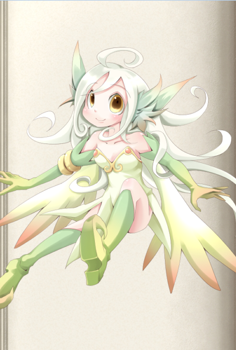

勇者称号
输给魔物娘就会被侵犯哦
▓▓▓▓背景▓▓▓▓
这是一个人类与魔物共存，天使们高居天界的世界。创世女神伊莉娅丝和初代魔王爱丽丝菲兹一世诞生于混沌，作为圣素和魔素两种对立元素的浓缩体，两个人划土而治，伊莉娅丝诞生伊始处于孤独，创造了自己的两个分身：米卡艾拉和露西菲娜，但分身太过于相像自己，伊莉娅丝开始追求“相似而不同”的分身，也就慢慢创造出了天使。
另一方面，魔王爱丽丝菲兹与伊莉娅丝不同，她拥有更加直接的手段——通过影响基因变异来改变生物进化的方向，因此也就拥有了以六祖为首的更加强大色气的魔物。
伊莉娅丝和爱丽丝菲兹的冲突随着时间渐渐激化，终于到了无可复加的地步，于是爆发了一次圣魔大战。
这场战争最终以爱丽丝菲兹和六祖选择了自我永久封印最终。但有一个限制：如果世界上的魔素与圣素失衡（伊莉娅丝违反协定屠杀魔物），封印就会自行解除。而实力叠加起来远超于伊莉娅丝的初代魔王和六祖也就会向伊莉娅丝发动复仇。
而在五百年前，“暴君”爱丽丝菲兹八世迷失于强大的支配欲，对世界造成了极大的破坏和混乱，第一代传说勇者海里因希手持露西菲娜制造的魔剑高格，并与支撑世界的四大元素的象征希尔芙，诺姆，温蒂尼，萨莱曼达签订契约，以之斩杀了“黑之爱丽丝”，后又冲上天界手刃了大量天使后，身体圣素化被魔剑高格吞噬了肉身。
五百年后，为了寻求人类与魔物娘共生之道，因此要前往魔王城打败当代魔王的勇者鲁卡，在当代魔王爱丽丝菲兹十六世友情赠送了魔剑高格并教导了四种战技后，踏上了和海里因希相同的道路，集齐了四大精灵并签订契约，在魔王手下四大天王风之阿露艾露玛，土之玉藻，水之艾露贝提耶，火之古兰贝莉娅的细心教导下，终于掌握了四大精灵的运用。然后冲入了魔王城打败了四大天王及魔王爱丽丝菲兹十六世，并随后杀上天界斩杀了创世女神伊莉娅丝。
有高级轮回者曾经进入过这个世界，并根据鲁卡的经历和掌握的能力创造出了这一套传说勇者训练法。
由于该世界的四大精灵象征着世界的四大元素，因此具现出来太过昂贵，不符合轮回者的量产化需求，因此由另一个施法者轮回者研究出了替代品的精灵的召唤仪式，并能通过强化仪式逐级强化上去。
▓▓▓▓能力▓▓▓▓
强化要求：只有男性才能进行这个强化。
D级：
精力：这是构成人体的基本物质，也是人体生长发育及各种功能活动的物质基础。《素问·生气通天论》：“阴平阳秘，精神乃治，阴阳离绝，精力乃绝。”
你开启精力能量池，它的关键属性是感知+耐力，恢复方式是通过一次1小时的休息，做一个关键属性的判定，恢复等于成功数的点数。以此方式每日回复的能量不可超过能量池3倍数值。或者通过一次长休息完全恢复。
血气旺盛：你的精力和血气是如此旺盛，以至于拥有低配版拳修武圣的能力……你会格外吸引喜食阳气的生灵，以及所有的魔物娘。她们会本能地察觉到你的精力对她们的好处。
当你被魔物娘擒抱住时，她可以以标准动作榨取你的精力恢复自身。这一般需要消耗15分钟时间，完成后你会损失1点精力并且一点完好生命转为严重，她可以恢复等同于你的称号等级点严重伤害，若严重槽完好则可恢复恶性伤害。这段时间内你和她都将没有动作可以行动，若是对方想缩短时间的话，可以进行一次智力+运动（专业：侍奉）的判定，你以强韧检定抵抗，她的每一个胜出数都将会缩短一半的时间（最低为一秒）。这个判定在一次补魔中只能进行一次。
PS：这个特性中的魔物娘的判定仅是非人类的女性，有部分人类血统部分人外血统的也算。只限这个特性。
注意：成功使用这种方法会使你和对方立刻并且无可挽回地失去贞洁誓言或类似能力所带来的奖励。
C级：
战斗本能：以孱弱的人类之躯对抗拥有各种能力的魔物，你必须掌握应付各种突发情况的能力，自己没反应过来，就让身体自行做出选择，你免疫B级及以下的措手不及。
战斗直感：身经百战的你对危险的感知额外敏锐，特别是暗地里的冷箭。你忽视8点高速优势。
B级：
战斗理论·守：多年的战斗经验让你总结出了一套应对魔物的方法，不同于高阶魔物强大的肉体，你只要被击中就会受到严重的伤势，战斗力明显的下滑。因此你必须先保护好自己，再去窥探敌人的破绽。你获得心眼·真。
二十年如一日：在与魔物的战斗中，你只能依靠你手中的武器来抵抗魔物的各种超凡能力，并用它打败敌人。二十年专注如一的挥动你的武器，让你对你的武器更加了解，你知道如何使用它会加大它的杀伤性，你的白刃检定获得8加骰。
A级：
战斗理论·攻：身为人类的局限性，注定着你与高阶魔物战斗时是拖不起的，它们的恢复能力相当惊人，你只能趁着找到它们的破绽的时候，出其不意，攻其不备，在最短的时间内斩杀它们。你的白刃攻击获得A级措手不及的效果。
真实之眼：长期与魔物的交战过程中，你获得了看破一切幻象的能力，任何魔物在你的眼中都无所遁形。你免疫A级幻象来源的能力，并且能如同火眼金睛一般能直接看穿你看到的任何事物的伪装，视为看破A级变形效果的能力（仅能看破，不能免疫），同时你还拥有灵感视觉和黑暗视觉，能够看透非超自然的烟雾。
▓▓▓▓精灵契约▓▓▓▓
你同时只能展现等于你称号等级（D1C2B3A4）只精灵，而且希尔芙，诺姆，温蒂丝，萨拉曼达具有唯一性，每一小队只能存在一只。
它们也有自己的世界观和人生观，有自己的智慧。签订契约后，平时它们会居住在你的心里，共享你的感官并对你的遭遇发表评论，在你有需要的时候可以消耗一定的精力（见描述）以自由动作将它们召唤出来，切换精灵则是一个迅捷动作而且一轮只能切换一个精灵。
最初的精灵需要购买D+500的召唤仪式并进行召唤，之后需要通过相应的强化仪式逐级进化精灵。如果ST开放造物的话则可以通过造物自行布置这个仪式并省下材料费，但是这个仪式必须由本人进行布置，因此别人无法帮你省下这笔钱。这个仪式视为魔幻本质的奇物。
希尔芙

描述：智商不高而梦想远大的风之大精灵。她的魔力远远高于普通的精灵，但是好像并不怎么擅长战斗。虽然拥有庞大的魔力和能够掌握风的力量，但是似乎也不会有效的运用。尽管如此，希尔芙对付普通的冒险者还是绰绰有余的。
和其他小妖精一样，很喜欢恶作剧，特别喜欢玩弄男性的……（中间略）……利用风的力量和身体淘气的玩弄……（中间略）……用于补充自己的魔力。
平常是以实体的方式出现，也可以变为灵魂体，所以能够以灵魂体的形式附在人类的肉体上，这便是希尔芙将力量借给人类的存在方式。但是，想要将希尔芙的力量运用自如可不是那么容易的事。所以，精灵只会把力量借给自己认可的人。
另外，所依附的人类在睡眠或因愤怒、欲情失去平常心的场合，与精灵的链接会暂时切断。若变成这样的话会连希尔芙的声音都听不到，希尔芙也会无法探知宿主的情况。
与大自然本身有所感应，若不慎伤害她的话甚至会对全世界的气象产生影响。
D级：
“希尔芙，借给我力量”
被动特性：风之感知：全身流淌着不可思议的力量，就好像自己的身体和周围的风混为了一体，并清晰感觉到体内有风的气息，用耳听着风声，就能像亲眼所见似的感知到周围的一切情况，你获得盲感，这是D级特异本质的侦测能力。
启动消耗精力：2点
风之守护：启动时周围5米内吹起强烈的风，风之力环绕着你，并将敌人的攻击吹开。你的闪避防御增加1点，对抗范围的判定也获得1点闪避加值。
特殊，它对挣脱阿温娜等植物系魔物娘的擒抱有奇效，你可以消耗1点精力和一个移动动作，移动你的敏捷*1米。你可以用此能力摆脱类似于擒抱，蛛网术等限制行动的效果。
这个阶段也就只能把风当屏障用了，要做到寄风于行，才能将风的力量化为极致。
另外：若是你的操纵值只有1点的话，你在使用希尔芙的力量的时候会被自己召唤的风卷飞，这会使你每轮损失一个整轮动作。
选开：风之力的使用：D+500，对植物系的敌人有很好的相性，让植物类的魔物的技能几乎全部无效化。用风之刃切开它的藤蔓，用风之力吹开它的花粉，用暴风吹散它的香气……你免疫D级基于植物类的能力对你的效果。
当希尔芙的等级提高到C/B/A级时，你可以补上相应的差价将它提到C/B/A级，并免疫C/B/A级基于植物类的能力。
C级：
“将这身体化为疾风”
被动特性：风之嬉戏：与以往不同的是——周围没有刮起大风，但身体里，充满了风的力量……你的侦测能力提高到C级，同时你的闪避防御和对抗范围的判定再增加1点闪避加值。
启动消耗精力：2点
新增特性：寄风于行：风之力的支配力上升，将风寄宿于行。你的移动速度增加20米，白刃攻击提升5点高速，能够宛如子弹一样快速的挥动武器。
B级：
“希尔芙，吹起咆哮的狂风吧”
被动特性：风之感知：现在风成为了你的眼睛，它流动的地方你都会如同亲眼看到，听到，接触到一般。你的盲感能力提升为盲视，并且侦测能力提高到B级，
启动消耗精力：1点
疾风之咆哮：启动时，你的周围会吹起咆哮的狂风。此时将风之力的极致寄宿于行，你将有更多的攻击回避，并且可以普通攻击连续攻击两次。
现在，你的闪避防御和对抗范围的判定再增加4点闪避加值。同时，你可以以一个整轮动作连续进行两次普通白刃攻击。
同时，你的身体仿佛变成了风一般，想飞向哪里就飞向哪里，你获得了等同于你的基础速度的飞行能力，机动性完美。
A级：
即然以前一样的契约没有效果，那就使用更强力的契约。
那是对契约所必要的仪式，不只是精神，也要用肉体缔结契约。
之后，希尔芙的力量会完全归属于你。
启动消耗精力：0点
特性提升：风之感知：只要世界上仍然存在【空间】这个概念，你就能用风之感知来替代你的五感，你的侦测能力提高到A级，并且敏感范围扩大一倍。
特性提升：疾风之咆哮：你与希尔芙融为一体，现在你就是大自然的风之化身，如果别人闭上眼睛，用其他能力来感知你，他会觉得你化为了一道暴风，并且现在你在科技类的摄像头，魔幻类的留影仪中的身影永远只会显露出一道待在原地的风暴的影象。这是因为强大的风之力量的气息干涉世界，所以，除非你刻意收敛，否则影像魔法阵记录到的只能是这样，而这种情况在正常肉眼所见时却不会出现。
现在，你的闪避防御和对抗范围的判定再增加8点闪避加值，风之力时时萦绕在你的周围，你就算不刻意做出躲避，风也会帮助你躲开敌人的攻击，这会令你在判定上一直处于全力防御状态（当然，你不能全力防御再全力防御）。同时，你可以以一个标准动作连续进行两次普通白刃攻击（取代B级特性）
每轮一次，当你受到攻击前可以以一个反射动作进行一次瞬间移动，移动范围为你的基础速度内，这会让你有可能离开敌人的攻击范围，也可以让你摆脱类似于擒抱，蛛网术，结界，囚笼等限制移动的能力。这是A级时空来源的效果。
特性提升：寄风于行：将风之力完美寄宿于行动中去，你将不受外在环境的影响，你处于寄风于行状态时，免疫A级环境来源的效果。
诺姆
描述：三无属性的土精灵。拥有庞大的魔力，可以自由操纵泥和土，但是不擅长战斗。那么庞大的土之魔力也只是闲着拿来做人偶玩的而己。以魔素为基础能量，姑且也算是魔物的一种，乃是寄有精神的大自然本身的存在。
在数百年前还在萨法鲁一地作为大地之神受人信仰，但在女神信仰成为主流的现在己无人祭祀，被彻底忘切。因此，意外地拥有容易感到寂寞的性格。
一般都以实体的形式存在，平时就在沙漠玩耍。也偶尔去绿洲游荡一下。碰见人类的男性的话，会先躲在一旁偷偷观察。
……（该段略）……
如果力量被诺姆所承认，诺姆就会将力量借给冒险家。之后，诺姆会变为灵魂体依凭在冒险者的身体上，让冒险家能够使用土之力理。
因为特别喜欢安稳的静寂，所以经常扇吵吵闹闹的希尔芙的巴掌。这姑且，也算是诺姆风格的亲切的证明。话虽如此，不要忘记，她还是有真正抑郁的时候。
D级：
“诺姆，把力量借给我”
启动消耗精力：2点
大地之力：随着你的一声低喝，强大的力量，从你的身体中涌出，那是充满了大地气息的刚力！你的力量检定和耐力检定分别增加2点增强加值。同时土之力改变着你的身体，你免疫C级创伤来源的效果。
土精灵的力量比风精灵的力量更难用，如果一个不小心，自己被卷进其中也是很有可能的，要想运用土精灵的力量，你必须拥有至少3点操纵，否则运用土精灵的力量攻击时不会对敌人造成伤害，而是对自己造成伤害，因为是来自自己的攻击，因此你对于这次攻击失去基防和闪防，格挡防御。
C级：
“将大地的气息充满全身……”
启动消耗精力：2点
大地的气息：与之前使用土之力的感受完全不同，自己的身体就像变成了坚韧的大地那样，源源不断的力量自身体里涌出，你的力量检定和耐力检定的增强加值提升到4点，并且你获得颤栗感知的能力。
新增特性：寄土于身：土之力的支配力上升，大地的气息寄托于身，防御力提高，你的天生防御提升4点，此外，你还免疫C级毒素来源的效果。
B级：
“诺姆，展现荒芜大地的力量”
启动消耗精力：1点
荒芜大地：将土之力的极致寄宿于身，几乎不受物理攻击，其他攻击的伤害也大幅度减小。
启动时你不会被普通物理行为影响或伤害到。但具有『魔法』『能量』『力场』『幽冥』等特性的行为都可以正常伤害或影响到你。
你的力量检定和耐力检定的增强加值提升到8点。
同时你获得等同于你的耐力附加成功数的全伤害吸收能力。
A级：
即然以前一样的契约没有效果，那就使用更强力的契约。
那是对契约所必要的仪式，不只是精神，也要用肉体缔结契约。
之后，诺姆的力量会完全归属于你。
启动消耗精力：0点
特性提升：荒芜大地：只要世界上仍有【物质】这个概念，就会有源源不断的力量提供给你，你的力量检定和耐力检定的增强加值提升到16。
特性提升：寄土于身：虽然你的体型和外表没变，但你光是站在那里，就给人一种山岳横在眼前的感觉。强大的土之力量保护着你：你的天生防御再提升等同于你的耐力值的数值，并且获得6DR/-，10点封闭特性，防弹防能量效果（关于封闭特性的判定上，视你的天生防御为盔甲防御，防弹防能量和DR/-效果都是基于你的天生防御的）
温蒂妮
笨蛋是看不到温蒂妮的图片的
描述：在名为【温蒂妮之泉】的地下洞窟中，躲避世人目光静静生活着的水精灵。以前还会在人类面前出现，现已经完全隐居不出了。
讨厌污染世间水域的人类，对于接近的人类会毫不留情地吃掉。被温蒂妮的身体包住的男人，会被一边……（略）……，一边被粘液构成的身体同化，最终被完全吸收。
不过尽管讨厌人类，对很久以前与人类共存的生活好像也仍有怀恋。
自身习得明镜止水之心，其战斗力极高。与萨莱曼达的关系不佳。
D级：
“温蒂尼，借给我力量”
水之流动：你可以感到体内有类似水流的东西，并形成潮流向外界延展开去，好似和世界的流动交联在了一起。这是一种能量感知方式，你可以感知到能量的流动，并直接判断出它的支线等级强度，多种不同的能量的流动方式在你的视野中也是不一样的，越强的能量流动的速度也就越快。这属于新增的感知方式而非侦测能力。
启动消耗精力：2点
水之屏壁：启动时你可以用水构成墙壁防御敌人的攻击，这会提供给你微弱的减伤效果，这会给你带来2点偏斜防御和2点对抗范围的判定上的偏斜加值。
水流映出心的影子——就是指寄水于心。
针对水之力的修行：D+500，然而上面那种水之力的用法从根本上就错了，应该把心投影到水的流动中，因此要进行精神上的锻炼。
方法是：首先，双腿盘起来，打坐。然后，心无旁鹜，将精神委托于流水，很快，你就能察觉出周围的流动中，似乎有杀气混杂在其中，并感知到自己心中的特殊流动。
通过这种方法，能够感知到自己敏感范围内的针对自己的不加掩饰的杀意的具体位置和强度，这并不仅仅对生物有效，即使是自动机枪，也会被你的心灵感应捕捉到，这不会给你带来侦测能力，但可能有剧情上的效果。这意味着如果你的敏感范围内别人不加掩饰的对你散发着杀意，也不进入潜行状态，那么你可以立刻察觉并精确定位他。
同时你的反射检定增加4点洞察加值。
这个技艺即使你不展现温蒂妮，也能够使用，因为这实质上是属于你自身的能力。
C级：
“将心寄托于水的流动”
启动需要精力：0点，但是每轮会消耗1点精力，直到精力耗光，当精力耗光时，你就会被水流弹回现实世界。
周围的【流动】似乎出现在了你的内心中。空气的流动，声音的流动，力量的流动——森罗万象的流动，全部投影在了自己的内心——那好像就是自己与世界融为了一体——
寄水于心：“水即是倒映内心的镜子。明镜止水，心如镜，澈如水——”
将心寄托于水的流动中。以明镜止水的状态进行战斗，你免疫C级影响心灵的效果，并获得明镜之步伐和止水之刃特性。
明镜之步伐：面对敌人的攻击，你就像看见了水流中的一颗落叶，像水的流动一样，自然而然地避开了。你的防御和对抗范围的判定上再获得2点偏斜加值。
止水之刃：宛如流水一般，将剑挥出，你能轻易地斩开巨龙的鳞甲，这不是依靠蛮力斩开的，而是水之力量，你的白刃攻击提升6点破甲。
B级：
“我的心，毫无迷惘……”
启动需要精力：4点
明镜止水：寄水于心，明镜止水的极致形态。清流透明的心，就是明镜止水的极致！你免疫B级影响心灵的效果（取代C级效果），同时你不会被虚招所欺骗，任何A级及A级以下的虚招类能力对你通通失效，视为对抗中你总是自动成功。
明镜之步伐：你处在惊人安静的水流之中，仿佛进入了时间停止的空间之中，这就是，明镜止水的极致，若是有多个人拥有明镜止水的能力，那么他们在战斗中会互相感应到对方掌握这个能力，这个感应能力不是侦测能力，因此不能帮各自定位对方，你的防御和对抗范围的判定上再获得4点偏斜加值，同时你将免疫B级时空来源的能力。
止水之刃：你的心再无迷惘，你的剑亦如是，你能用止水之刃切开火球，破掉结界。你的白刃攻击提升6点破魔。
关于明镜止水的修行：虽然没有温蒂妮在身边，依然掌握了明镜止水的心境。对敌人的闪避增加。
即使不展现温蒂妮，你也能拥有明镜止水的心境，并且掌握相关的能力：
明镜之步伐：C+1000：你依靠明镜止水之心开发了一套属于你自己的步法，这让你更容易闪躲敌人的攻击。你的闪避防御增加4点，并且运动技能变成9加骰。
止水之刃：C+1000，依托明镜止水的心境，止水之刃让你的白刃技巧越发纯熟的同时，也能斩断你自己的迷惘。你的白刃判定额外提高4点技艺加值，同时你的意志检定变为9加骰。
“我的心，澄澈如水。”
清澈的心，达到了明镜止水的极致。
A级：
即然以前一样的契约没有效果，那就使用更强力的契约。
那是对契约所必要的仪式，不只是精神，也要用肉体缔结契约。
之后，温蒂妮的力量会完全归属于你。
启动消耗精力：0点
洞敌冰心：这是明镜止水的一种运用方法，明镜凝结在水海，映照出周围的景象，这个景象内，森罗万象的流动变化，你都了解于心，让你能提前判断，做出响应。你的防御和对抗范围的判定上再获得8点偏斜加值并且免疫S级措手不及。
虚空遇神，照见自我：你凝明镜于心海，意如烈火，心如明镜。这个状态下你免疫A级影响心灵的负面效果（取代B级特性）。
特性提升：止水之刃：只要世界上仍有【时间】这个概念，你就可以感应森罗万象的流动，然后顺着流动斩过去，这一击甚至能将巨龙吐过来的龙息劈开。你能够以一个标准动作斩断法术或超自然力量造成的结果，就如果“解除魔法”一般，不同的是，你以普通白刃攻击检定取代施法判定与对方的相关检定进行对抗，对方效果等级每比A级高一级，攻击检定就受-3减值，若胜出则此效果立刻解消。
你也可以以一个反射动作施展止水之刃。
萨莱曼达
笨蛋是看不到萨莱曼达的图片的
描述：有着绝高战斗能力的炎之精灵。性格非常粗暴，其自尊心也非常高。身为魔物的同时也可说是大自然本身的存在，其身体若有异常的话，在世界范围内燃烧化学反应会发生异变。平时在戈德火山的洞窟深处隐居，和外界完全没有交流。不过在魔物之间是非常有名的猛者，有许多魔物希望能成为其门下弟子，不过其对于拜师要求基本都会一概拒绝。
也有很多战士为了扬名而前来挑战，萨莱曼达对于这些挑战者会毫不留情将其击败。若对方是男人，更会加以彻底凌辱。……（中间略）……。因为并不爱好杀戮，不会将对方▓▓至死，在其快要衰弱而死的时候就会将其丢弃在洞窟外面。
对自己所认可的对手会发誓效忠，不过让自尊心很高的萨莱曼达所承认当然不是件容易的事情。
和温蒂妮之间与其说是关系恶劣不如说是互为对手，有时会拳脚相交，还未曾分出过胜负。
D级：
“萨莱曼达，把力量借给我”
启动消耗精力：2点
烈火之刃：借助萨莱曼达的力量，点燃自己的斗争心，若是将斗争心昂扬至极限，便可催生出灼热的业火，将此火炎寄在剑上，只要挥舞这寄宿有火精灵莎莱曼达的灼热之剑，便可提高些许威力吧。你的白刃攻击检定获得了2点士气加值，你的白刃攻击伤害可以转换为火焰能量伤害，这种业火可以正常攻击灵体，并使你手持的剑附带【魔法】特性。
C级：
“将红莲业火召唤于此”
启动消耗精力：2点
业火的剑技：将斗争心燃烧到极致，产生出的灼热的业火。现在使出的所有技能，都会带着红莲之火，而且威力大增的剑刃，能够撕裂任何敌人。你的白刃攻击检定再获得4点士气加值并且获得幽冥属性。
寄火于技：你所使用的剑技消耗的精力减少2点（最低为1），同时你的剑刃武器伤害提升3L，这是火焰能量加值。
B级：
“萨莱曼达，炼狱的火焰”
启动消耗精力：4点
炼狱之魔技：火之力的极致，灼热的业火寄宿于技。你的剑被灼热的业火包围着，全身都迸发着热气。从剑身发出巨大的力量，内心却保持着平静而不是以前的沸腾状态，从此用平常心支配火之力就可以了。你DC级获得的士气加值转变为表现加值并且再提高8点，你的剑刃武器伤害再提升6L。
并且这个状态下你使用的本称号下的剑技时，都会造成等于胜出数的燃烧点数，标准豁免。
A级：
即然以前一样的契约没有效果，那就使用更强力的契约。
那是对契约所必要的仪式，不只是精神，也要用肉体缔结契约。
之后，萨莱曼达的力量会完全归属于你。
启动消耗精力：0点
火之牺牲：萨莱曼达是大自然的火之化身，也是世界【能量】的象征。你可以以一个反射动作点燃自己，让斗争心突破极限。此时你的所有能量池都将处于满值状态，但是当你燃尽生命的时候你会无可避免地走向死亡，持续时间为你的生命值上限*1分钟。这一效果可以给别人使用，在他自愿接受此效果时，此时别人只能选定一个能量池始终于处满值状态，并且依据他的支线等级获得同级萨莱曼达的加持（最高为A级），同样只会持续他的生命值上限*1分钟，之后就会无可避免地走向死亡。
注：这个特性燃烧的不仅是你的生命，还有你的业力，因果……等等，因此一般来说，只有轮回者和有份量剧情人物才能接受这个效果，而且还需要是活着的生物。燃烧完自身后将会因为复活的手段和凭依也被一并燃尽了而无法复活。
特性提升：寄火于技：强烈的斗争心与萨莱曼达产生共鸣，现在，她全部的战斗经验流淌入你的脑海中，你的战斗技巧获得了极大的飞跃：
你现在能以自由动作宣告进行一次白刃格挡，若你己有心眼·真，则你可以以自由动作替代移动动作使用心眼·真的效果。
你DCB级获得的表现加值再提高16点，并且你用本称号下的剑技攻击敌人时，都可以轻易地绕开敌人的盔甲和天生防御，这会让你使用剑技时获得【接触攻击】特性。
萨莱曼达一生与绝大多数魔物进行过争斗，这让她拥有对魔物战斗的丰富经验和理论，在她的辅助下，你可以在攻击时以一个迅捷动作对受到攻击的目标发动一次虚招，这次虚招用普通白刃攻击检定取代正常的虚招判定，只要敌人不是无智力的蠢物，它对几乎所有类型的敌人都可以无减值进行虚招判定……除了萨莱曼达的对手，一直未与她分出胜负的拥有明镜止水之心的温蒂妮。这是A级的虚招效果，替代正常的虚招效果，转为使敌人面对你这一次攻击时近战攻击时，在格挡防御上承受你胜出数的减值，没有上限。
红莲业火：业火不仅仅只能对敌人使用，你也可以用业火灼热自身，燃烧自己的罪孽，劫尽琉璃生，意如烈火，心如明镜。你免疫S级的诅咒来源的能力。
▓▓▓▓技能树▓▓▓▓
“寄风于行，寄土于身，寄水于心，寄火于技——能做到这些，才能将精灵的真正力量充分发挥出来。”
——BY 海因里希
（他领悟了这些后，消灭于当时的魔王，被称为【黑之爱丽丝】的暴君，爱丽丝菲兹八世）
由于第一代勇者海因里希的剑技于500年前己失传，主神收录的是第二代勇者鲁卡成长过程中掌握的剑技。
魔剑·斩首
价格：D+500
前置：长剑，骑士剑
“就这样，要充分利用脚步配合。剑这种武器，并非只需要腕力。”
扑向敌人怀中，并向其喉咙斩击的剑技，非常容易使用，无论对怎么样的对手都能发挥效果的稳定技能。黑暗精灵妖剑士扎克斯用此技斩下了数百人的头颅，谱写了一段辉煌的传说。
消耗1点精力和一个整轮动作，对你移动速度内的一个敌人的咽喉发起冲锋，这次攻击不承受部位减值，对方以反射相对抗，每胜出1点成功数造成1点严重伤害，最后再计算攻击咽喉的特效。
被这招击杀的敌人的头颅会被你斩下来。
雷鸣突刺
价格：D+500
前置：长剑，骑士剑
“就是这样……要稳定住上半身！不要晃动！”
疾风魔剑的使用者【涂血的费尔南迪斯】的得意剑技，血裂雷鸣刺。费尔南迪斯所刺杀的敌人之多以致于在地面上汇聚成了一面湖。
鲁卡觉得这个名字太恶心和血腥，因而将它的名字改为【雷鸣突刺】
“这个剑技正如其名，像闪电般地刺过去，在战斗刚开始的那一刻能发挥最大的效果，其他时间就比普通的攻击强一点。”
消耗1点精力和一个标准动作，迅速向敌方突刺过去，由于剑快近音，破空声如同雷鸣一般，让人反应不过来因而得名。这次攻击带有D级措手不及以及2点高速，若是在战斗的第一回合发动，则提高到C级措手不及以及6点高速。
被这招击杀的敌人心脏将会被刺穿。
天魔头盖斩
价格：D+500
前置：长剑，骑士剑，要在高空中才能发动，或者附近需要有能够攀登的地方才能使用。
“一般来说，在战斗中高跳是自杀行为，但这个天魔头盖斩是不同的。以无法捕捉的速度落下，砸碎敌人的脑袋。”
天魔头盖斩有着“有翼死神”之称的哈比魔物迪斯莱亚的剑技，她用此技敲开了三百人的脑壳，在大地上洒满脑浆。
消耗1点精力和一个整轮动作，从高处飞身而下猛斩向对方头部。进行一次移动后立即对身前的敌人进行一次攻击，这次攻击附带【眩晕】和【威猛6】的特性。并且这不是冲锋，因此不享受冲锋的好处和坏处。
被这招斩杀的敌人的脑袋会被砸碎。
死剑·乱星
价格：D+500
前置：长剑，骑士剑
“无数斩击的沐浴，对敌人剑舞般的攻击，这就是死剑·乱星。”
创出此技的六手剑士迦拉曾经将一整个骑士团变成肉块。
花费1点精力，以标准动作挥出纵横无尽的斩击，每一斩都衔接得毫无空隙。当你进行攻击时，攻击一个目标的同时对其相邻的敌人进行斩击，视为【连射】特性，这些敌人也必须在你的触及范围内并正常按照连射规则承受减值。被你攻击的敌人还会承受等同于【连射】DP加值的多次攻击减值。
瞬剑·迅雷疾风
前置：雷鸣突刺
价格：DD+500（由雷鸣突刺补差价进化而来，这个技能会代替雷鸣突刺的位置，因此强化后不能继续使用雷鸣突刺了）
“你在战斗中也可以比较好地使用风的力量了。现在的你，应该可以将风之力运用在剑术上了。”
“关于这个技能……像往常一样，先将风寄宿于行动上……”
放出技能的瞬间，会产生身体化作了风的错觉。以自身都无法察觉的速度放出高速突刺，完全是雷鸣突刺的超级强化版。
死神娘娜那都丝用这招夺取了数百人的性命。
消耗3点精力和一个标准动作，迅速向敌方突刺过去。这次攻击带有C级措手不及以及5点破甲，若是在战斗的第一回合发动，则提高到B级措手不及以及10点破甲。
若使用此招时你已经处于寄风于行状态，则这个技能的威力会有所提升，额外增加【超级贯穿】的特性。
坏斧·大山鸣动
前置：天魔头盖斩
价格：DD+500（由天魔头盖斩补差价进化而来，这个技能会代替天魔头盖斩的位置，因此强化后不能继续使用天魔头盖斩了）
“运用土之力量跳起再扣下——这就是坏斧·大山鸣动。”
将大地之力充满全身，用力扣下，传说中的魔斧战士米诺陶，使用这个技能劈开了一座山，山上住的人类也全部变成碎片了。这个招式是天魔头盖斩的派生技能，技能的基础特征和天魔头盖斩相似，不过，现在可以不依靠高地便能释放了。
花费3精力，先以移动动作进行一次跳跃检定，并将成功数的一半作为DP加入到接下来的那次攻击中，这是由于自上而下的攻击带来的环境加值。然后再以标准动作将武器扣到敌人脑袋上，这次攻击附带【晕眩】和威猛6点的特性。
如果在寄土于身的状态下使用这一招，威力会上升，这一招的威猛值会提升4点。
特殊的，这个技能也可以用斧头施展，因为创造这个技能的米诺陶洛斯娘是使用斧头的，但是就算是用剑释放也没有关系。
魔刀·明镜止水
价格：DD+500（由魔剑·斩首补差价进化而来，这个技能会代替魔剑·斩首的位置，因此强化后不能继续使用魔剑·斩首了）
“明镜止水的境地下，放出神速的居合斩——那就是，魔刀·明镜止水”
前置：魔剑·斩首，即时备战2级
首先将剑收入剑鞘，将心委于水流，然后快速拨出，乘着水流，剑光一闪。消耗3点精力和一个整轮动作，对10米内的一个目标进行一次白刃攻击检定，挥出一道剑气，对方以反射相对抗，每胜出1点成功数造成1点严重伤害。
同时，若你处于寄水于心状态，这次攻击还会造成等同于胜出数的流血效果。
当你处于明镜止水状态使出这个技能后，你会立刻退出明镜止水状态并且只有在下一轮才能重新召出温蒂妮。
魔侍爱丽蕾亚对包围自己的骑士轻挥一刀……被切断的上半身和下半身就像是花瓣一样在空中飘舞。
被你斩杀的敌人的上半身和下半身将会像在花瓣一样在空中飘舞。
乱刃·气焰万丈
价格：DD+500（由死剑·乱星补差价进化而来，这个技能会代替死剑·乱星的位置，因此强化后不能继续使用死剑·乱星了）
“红莲之炎，寄于剑刃……乱刃·气焰万丈”
前置：死剑·乱星
魔族四天王之一，火之古兰贝莉娅自创的秘技，将火焰寄宿在剑中，挥出无数斩击的红莲奥义。
花费3点精力，以标准动作发动近战白刃攻击，当你进行攻击时，攻击一个目标的同时对其相邻的敌人进行斩击，视为【连射】特性，这些敌人也必须在你的触及范围内并正常按照连射规则承受减值。被你攻击的敌人在这次攻击中还会如同已经被攻击了九次一般承受相应的多次攻击减值。
当你处于寄火于技状态使出这个技能时，红莲业火将毁灭一切结界，这次攻击将会附带10点破魔效果。
这个剑技并不像其他剑技一样拥有相应的传说，因为古兰贝莉娅几乎不需要使用它就能轻易取得胜利。
元素·室女座兛星
价格：A+4000
“四元素的力量，注入我手！”
前置：处于寄风于行，寄土于身，寄水于心，寄火于技状态
由第一代勇者海因里希创造的奥义之一。将四大精灵的力量同时集中在右腕，将敌人撕裂的剑技。
消耗7点精力以标准动作使用。寄风于行，寄土于身，寄水于心，寄火于技，然后对着敌人挥出这一剑。分别进行一次敏捷，强韧，沉着，决心检定。并将成功数加起来作为特殊的风/土/水/火能量加值计入攻击DP中，然后对敌人进行一次白刃攻击。这次攻击造成特殊的元素能量伤害，敌人在减伤时，会以音波能量抗力/物理伤害吸收/寒冰能量抗力/火焰能量抗力/全能量抗力取高作为这次伤害的能量抗力进行减免。但是这次攻击根据音波/物理/寒冰/火焰这四项中最低的那项造成对应的等于胜出数的纠缠/晕眩/冻结/燃烧点数。如果敌人同时有多个抗力最低，则随机触发。
千兆·四重奏
价格：S+8000
“这个剑技的威力，是属性力量的相乘。一个属性的威力是十的话，那这就是四个十相乘。十的四次方，高达一万的威力。真正的，传说中的，同时使用了四属性力量的究极勇者奥义。”
这个技能对于魔族来说，可是相当禁忌的。勇者海因里希用这个奥义消灭了魔王爱丽丝菲兹8世。
这个剑技需要消耗9点精力以及四个整轮动作蓄力和一个标准动作来施展。
第一个整轮，你需要将剑指向天空，召唤希尔芙，让风缠绕在剑上，此时你需要过一个DC为1的操纵检定以维持风之力。
第二个整轮，就那样朝剑中注入土之力，当然，风之力需要维持住。此时你需要过一个DC为2的操纵检定以平衡风土。
第三个整轮，接下来是水之力，和风土一样，召唤在剑上，此时剑身发出光芒，而且剑像是离开水的大鱼一样，震动个不停，你需要过一个DC为4的操纵检定来保持三个力量平衡。
第四个整轮，最后召唤火之力，将四属性力量全部加在剑上面，这时剑就像是脱缰的野马一样，激烈地摇晃着。刀刃冒出热气和冷气，还有疾风，根本就没办法控制，四个属性难以保持平衡，马上就要崩溃开了——你需要通过一个DC为8的操纵检定来保持四大力量平衡。
最后，以一个标准动作，拿着这把剑对着敌人劈下去。
暴走的力量瞬间轰击向敌人。大地开裂，冷气和热气随着狂风呼啸喷出。不同性质的属性叠加在一起，造成的破坏力无比巨大。这次攻击中你将会获得等同于你的四大精灵支线等级（D1C2B3A4，上限为4）相乘的DP能量加值，造成纯粹而强大的破坏力。并会对敌人造成等于胜出数的纠缠（风），晕眩（地），冻结（水），燃烧（火）点数，特别的，由这个剑技造成的燃烧点数和冻结点数并不会互相反制。
缺陷：在这个期间，你只要被攻击并成功命中一次，已经寄宿了的力量就会消失，那样的话，技能就发动失败了。此外，还有一个麻烦的地方，在发动的时候，会自动收回所有已经召唤出来的精灵。换言之，你需要在所有属性都消失的4个回合之内不能被攻击命中一次。
注：这是传说中的勇者的究极奥义，学会这个剑技的你才有资格自称传说级勇者。
注2：上面的“上限4”是因为轮回者酱油成功地通过各种资源的特效，凑出了真的加了1万DP的原版的千兆·四重奏后，被主神紧急增添的限制（）
元素调合：A+4000
你对元素的掌控越发熟练，不再会发生元素失控的事情，你在进行千兆·四重奏的时候，不再需要通过四个操纵检定，并且已经召唤出的精灵不会被收回，即使被攻击，已经寄宿的力量也不会消失。虽然你仍需花费四个整轮蓄力。
四元素召唤：S+8000
前置：元素调合
“大家，一起上吧”
你可以以一个迅捷动作同时展现希尔芙，诺姆，温蒂妮，萨莱曼达。当你使用这个技能后，你的千兆·四重奏不再需要蓄力四轮，只需要一个标准动作便可发动这个剑技。